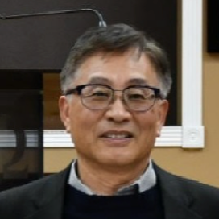

우리의 사명
우리는 모든 민족을 제자로 삼고 하나님께 영광을 돌리고 싶습니다.
우리는 모든 사람을 소중히 여깁니다.
(창세기 1:26) - 하나님이 이르시되 우리의 형상과 우리의 모양대로 사람을 만들자...
우리는 모든 사람을 예수님의 제자로 만들기 위해 노력합니다
(골로새서 1:28) - 우리가 전파하며 권하고 모든 지혜로 모든 사람을 가르치는 이는 바로 그분이시니라...
우리는 우리가 하는 모든 일에서 하나님께 영광을 돌리고 싶어합니다.
(고린도 전서 10:31) - 그러므로 먹든지 마시든지 무엇을 하든지 다 하나님의 영광을 위하여 하라.
주일예배 (한어)
Sunday Worship |
1부 오전 8시
(전통적인 예배)
3부 오전 11시 15분
(열린 예배) |
주일 오전 11시 30분
(Sunday 11:30 am) |
주일예배 (영어)
Passage Fellowship |
2부 오전 9시 30분
(Sunday 9:30 am) |
금요일 저녁 6시
(Friday 6:00 pm) |
수요예배
Wednesday Service |
오후 7시
(7 pm) |
영어 성경 공부
Adult Bible Study
주일 오전 11시
(Sunday 11:00 am) |
새벽 기도회
Day Break Prayer |
월, 화, 수, 금
오전 5시 30분
(M,T,W,F 5:30 am) |
가정교회 모임
House Church
각 가정교회 별 |
중보기도 모임
Intercessory Prayer |
토요일 오전
9시 30분
(Saturday 9:30 am) |
QT 나눔방
Quite Time Sharing
주보 참조 |
노숙자 사역
Homeless Ministry |
토요일 오전 8시 ~ 9시
(Saturday 8 ~ 9 am)
@ Life in Christ Community Church, 102 E. Palmdale St. |
제자 훈련
Discipleship Training |
생명의 삶, 새로운 삶, 하나님을 경험하는 삶
변형하는 가정교회, 하나님과 만나는 QT |
디아스포라 청년부 모임
(Young Adult) |
금요일 오후 6시 30분 교회에서
(Friday 6:30 pm) @ Tucson True Light Church |
교회 사역자 소개

박경환
담임 목사
이메일: truelightus@cox.net
전화: 520-571-8770
박 목사님은 1995년 투산 참빛교회 담임 목사로 부임하셨습니다. Southeastern Baptist Theological Seminary(M.Div/CE), Dallas Theological Seminary(STM), University of North Texas에서 교육학 박사(Ph.D.)를 취득하셨습니다. 아내 조성미 사모님과 두 딸 저스틴, 크리스틴과 함께하고 계십니다.
Ken Kemp
영어권 평신도 목사
이메일: kenkemp3@gmail.com
전화: 520-907-7083 / 520-571-8770
켄 목사님과 아내 문 사모님은 1996년부터 교회를 섬기며, 주일학교 교장, 교육 및 선교 위원장, 영어부 목사 등 다양한 역할을 맡아오셨습니다. 현재는 영어권 목사로 사역하시며 트위터 @kk4me2를 통해 매일 묵상을 나누고 계십니다.
KC Mun
교육 및 영어 장관
이메일: kcmun123@gmail.com
전화: 480-364-8942 / 520-571-8770
KC 문 선교사는 1998년 청소년부 담임목사로 처음 사역했으며, 이후 투산 트루 라이트 교회(Tucson True Light Church)에서 영어 예배(주일 오전 9시 30분)를 인도하고, 청소년부(오전 11시 15분)를 가르치며, 교육부를 감독하기 위해 다시 사역에 복귀했습니다. 그는 루크 박 담임목사의 교회 리더십을 보좌합니다. 그는 게이트웨이 신학교(2025년 졸업)에서 M.Div. 학위와 경영학 학사 학위를 취득했으며, 목회와 사업 분야에서 30년 이상의 경력을 쌓았습니다.
교회 안수집사
제 1 장: 총칙
제 1 조: 명칭
본 교회는 투산 참빛교회 혹은 Tucson True Light Church라고 부른다.
제 2 조: 신앙 규범
본 교회는 신구약 성경이 하나님의 감동으로 된 하나님의 말씀으로서 성경만이 모든 믿음과 행동의 기준임을 믿으며
성도들의 일체의 생활 태도, 사고 방식 및 가치 판단과 교리 기준에 이를 믿는다. 그러므로 본 교회의 모든 규율은 성경의 가르침에 복종하며,
1963년 남침례교단이 채택한 "침례교회의 이상"에 수록한 신앙고백에 동의한다.
제 3 조: 사명과 목적
본 교회는 복음과 관련성을 가지고 이 시대에 잃어버린 자들을 예수 그리스도의 제자로 변화시키며
예배와 양육과 전도와 사회봉사에 헌신하는 복음의 공동체로서 기능한다.
제 4 조: 협력
본 교회의 운영 권한은 본 교회를 구성하는 성도들에게 있으며 교단이나 타교회의 간섭 혹은 제재를 받지 않는다.
그러나 본 교회는 북미 남침례교단에 가입한 교회로서 미남 침례교회 및 아리조나 주총회와 카타리나 지역회에 참여, 협조하고 지지한다.
제 2 장: 정회원
제 5 조: 자격
본 교회의 정회원은 예수 그리스도를 자신의 구주로 믿고 교회에서 시행하는 새가족반을 수료하고
침례(세례)를 받은 만 18세 이상인 남녀로서(따라서, 유아세례는 인정되지 않음)
본 교회의 집회에 정기적으로 참석하고 기도와 물질로 교회를 지원하며
각각의 은사대로 교회 사역에 적극 참여한다.
제 6 조: 가입
본 교회의 정회원이 되기 원하는 자는 제 2장 제 5조의 정회원 자격을 소유한 자로서,
본교회의 신조와 방침에 동의하고 정회원으로서의 책임과 의무를 성실히 수행하기로 서약한 후에
예배에 출석한 정회원의 과반수의 찬성을 얻으면 된다.
제 7 조: 권리
본 교회의 정회원은 성경의 가르침에 의해 성찬식에 참여할 수 있으며 사무총회의 의결권을 소유한다.
제 8 조: 제명 및 정회원 자격 회복 방법
- 제 1항: 본인이 서면으로 제명을 원할 경우
- 제 2항: 타 교회로의 이적과 그 교회 회원이 되었음이 확인된 경우
- 제 3항: 사망한 경우
-
제 4항: 정당한 이유 없이 교회에 6개월 이상 결석하며 정회원의 임무를 등한히 하는 경우
-
제 5항: 비도덕적 행위를 통해 타인에게 피해를 주며 교회의 거룩함을 훼방하거나
회개하지 않는 정회원은 징계의 대상이 된다.
-
제 6항: 징계의 절차는 마태복음 18:15–17절을 근거로 하되 감독과 절차는 운영위원회에서 소관하며,
출교의 경우엔 사무총회에서 출석 회원 2/3의 결의를 제안토록 한다.
-
제 7항: 징계의 목적은 징계로 아시게 되고 회개를 인도하여 하나님의 관계를 회복시키는데 있으며
교회의 거룩함을 지키는데 있다.
-
제 8항: 제명된 자가 회개와 증거가 있을 때에는 가급적으로 속히 운영위원회의 심사를 거쳐
사무총회에 보고하여 출석 교인 2/3 이상의 찬성으로 교인 자격을 회복시킬 수 있다.
제 3 장: 제직
제 9 조: 담임 목사
-
제 1 항: 담임 목사는 교회의 영적 지도자로서 교회의 비전과 방향을 제시하며
교회가 예수 그리스도의 주권 아래 효율적으로 기능할 수 있도록 인도할 책임이 있다.
담임 목사는 전체 교인들이 각자 자신의 은사를 활용해서 사역할 수 있도록 도우며,
교인들을 하나님의 말씀으로 양육한다. 예배와 말씀 선포와 교육과 목회의 지도자로서
모든 회의에 참석할 수 있다.
-
제 2 항: 담임 목사는 정규 신학교에서 목회학 사역 과정을 마쳤고,
남침례교에 혹은 그 계열교단에서 안수를 받은 자라야 한다.
-
제 3 항: 담임 목사의 구속이나 직역의 목사를 선정하기 위해 목사 청빙 위원회를 소집한다.
이에 있어 사무 위원회는 교회에 최소한 5명에서 최대한 9명까지의 후보를 추천,
운영 위원회의 인준을 거쳐 청빙 위원으로 위촉한다. 청빙 위원장은 집사가
우선하며 청빙 위원회에서 선출된다. 청빙 위원회는 한번에 한 후보만을 추천할 수 있다.
청빙 위원회가 추천한 후보 목사는 사무총회에서 출석한 교인의 3/4 이상의 찬성을 통해
담임 목사로 청빙된다. 목사 초빙을 위한 사무총회는 소집 전 최소한 2주간 연속적으로
공식 광고가 있어야 한다.
-
제 4 항: 담임 목사는 사임할 경우 적어도 2개월 이전에 운영 위원회 및 사무 위원회에 통보해야 한다.
과반수로 운영 위원 및 사무 위원의 동의가 동반된 사임안을 결의할 경우,
사무총회의 80%의 가결을 통해 확정된다. 목사 사임건에 관한 사무총회는 소집 전
최소한 2주일간 연속적으로 공식 광고가 있어야 한다.
- 제 5 항: 담임 목사는 모든 제직들의 직분 수행 정도를 매년 1회 검토하는 반면,
운영 위원회는 담임 목사의 직분 수행 정도를 매년 1회 검토한다.
- 제 6 항: 담임 목사의 사례비 및 혜택은 운영위원회에서 매년 1회 검토하고,
결의 사항은 신도 사무총회의 80%의 가결을 통해 확정된다.
- 제 7 항: 담임 목사의 정년은 65세로 한다. 단, 교회의 요청에 의해 70세까지 시무할 수 있다.
제 10 조: 부목사 및 전도사의 자격 및 임무
- 제 1 항: 부목사의 자격은 목사의 자격에 준한다.
- 제 2 항: 전도사는 목사 및 부목사를 보좌하여 담임 목사가 부재 시 부목사나 운영 위원회에서 지정한 인물로 수행한다.
- 제 3 항: 청빙된 전도사는 실습 전도 및 목사의 기도/지도 하에 사역할 수 있다.
제 11 조: 집사
- 제 1 항: 집사는 본 교회의 봉사자로서 담임 목사를 적극 보조하고 맡은 바 책임을 충실히 수행하며
성도들에게 신앙의 모범을 보일 수 있는 자로서, 성도들의 신앙 발전과 교제를 도모한다.
- 제 2 항: 집사는 디모데 전서 3:8~13절에 부합한 자로서 예수님을 자신의 구주로 믿고
침례(세례) 받은 지 적어도 5년 이상 경과된 자로서, 35세 이상의 남녀 성도 가운데 선출된다.
- 제 3 항: 집사는 본 교회에서 실시하는 영적 지도자 훈련을 이수해야 한다.
- 제 4 항: 집사의 선출 방법은 사무 위원회의 추천과 운영 위원회의 결의를 거쳐
총회 출석 인원의 2/3 이상의 찬성을 받은 후 본 교회 집사로 봉사할 수 있다.
-
제 5 항: 집사의 시무임기는 4년이며 4년 경과하면 1년이 경과된 후에 재시무하게 된다.
단, 사무 위원회와 운영 위원회 2/3 이상의 추천과 사무총회 2/3 이상의 찬성으로 계속 시무할 수 있다.
-
제 6 항: 본 교회의 신앙노선이 같은 교회에서 전임한 안수집사 혹은 장로는
본 교회 출석 2년이 지난 후 사무 위원회의 추천과 운영 위원회의 심의를 거쳐
총회 출석 인원의 2/3 이상의 찬성을 받은 후 본 교회 집사로 봉사할 수 있다.
-
제 7 항: 집사의 권고 사면은 운영 위원들 및 사무 위원들의 80%가 동의해서 권고 사면을 권할 경우,
사무총회의 80%의 가결을 통해 확정된다. 집사 사임건에 관한 사무총회는
소집 전 최소한 2주일간 연속적으로 공식 광고가 있어야 한다.
- 제 8 항: 집사의 정년은 65세로 한다. 단, 교회의 요청에 의해 70세까지 시무할 수 있으며,
정년 후에도 목자와 부서장으로 봉사할 수 있다.
제 4 장: 가정교회
제 12 조: 가정교회
- 제 1 항: 정의 – 가정교회는 평신도를 지도자로 하여 예수 그리스도를 믿지 않는 사람들의 전도와
믿는 성도들 간의 섬김을 목적으로 매주 가정에서 모이는 모임이다.
-
제 2 항: 조직과 직책
- a. 각 가정교회의 구성원은 가정교회원이라 부르며 각 가정교회마다 목자, 예비 목자, 교사를 임명하여 사역을 담당하게 한다.
- b. 목자는 가정교회를 책임지는 평신도 지도자이며 본 교회에서 실시하는 영적 지도자 과정을 모두 수료한 후에 목자 모임의 추천 및 의결을 통해 담임목사가 인증한다.
- c. 목자가 되기 위한 소정의 과정을 수료하지 못한 경우에는 가정교회원들의 동의와 소속 목자의 추천에 의거해서 대행 목자로 임명 받을 수 있다.
- d. 영적 지도자 과정 및 목자 선출의 세에 의한다.
제 5 장: 교회 직원
제 13 조:
-
제 1 항: 직원의 채용
본 교회는 교회의 필요에 따라 직원을 초청하거나 채용할 수 있다. 각 직원을 채용할 시에는 교회는 문서화된 직무 설명 (Job Description)을 구비해야 한다. 목사를 제외한 직원의 채용은 운영위원회에서 심의, 결정한다. 직원에 대한 사례비는 운영위원회에서 결정한다.
-
제 2 항: 교회 직원
직원은 교회비서, 반주자, 관리인 또는 사찰 및 보육인 등 교회 생활을 유지하기 위한 요원들로서 필요시에는 성가대 지휘자도 여기에 준한다.
-
제 3 항: 정년
교회 직원의 정년은 65세로 한다.
-
제 4 항: 교회 직원의 자격
교회 직원은 교회의 정식교인임을 원칙으로 한다. 사정에 의해 정식교인이 아닌 경우에도 가능하지만, 직원은 반드시 예수 그리스도를 구주로 믿고 그리스도인으로서 비도덕적인 문제가 없는 자라야 한다.
제 6 장: 이사 (Trustees)
제 14 조:
- 이사는 사무 위원회에서 추천하고 운영 위원회에서 인증하며 인원은 4명으로 한다.
- 선출된 이사들은 교회 재산의 법적 관리를 담당한다.
- 교회의 특정한 인증없이 이사들은 교회 재산을 처분하거나 담보 제공, 임대하거나 명의를 이전할 권리를 소유하지 못한다.
- 이사들은 교회 재산의 매매, 차압(mortgage), 임대, 혹은 법적 문제, 소송 등에 사법적 권한을 수행하지 않는다.
- 이사들은 교회 재산 매매, 차압, 임대 등은 법적 문서에 서명할 필요가 있을 때 자신들의 서명을 첨부하는 기능을 수행한다.
제 7 장: 부서 및 위원회
제 15 조: 각 부서
- 제 1 항: 본 교회는 필요에 따라 부서를 형성할 수 있으며 그럴 때에는 부서별 직무 설명(Job description)이 제시되어야 한다.
- 제 2 항: 각 부서의 부장은 집사가 되는 것을 원칙으로 하되 필요에 따라서는 평신도가 될 수도 있다.
- 제 3 항: 부장의 임명은 담임 목사가 추천한 것을 운영 위원회와 사무 위원회 2/3 이상의 찬성으로 인증하고, 사무총회에서 과반수 이상의 찬성으로 가결한다.
- 제 4 항: 교회의 필요에 따라 운영 위원회 및 사무 위원회의 결의를 거쳐 다음과 같은 상임 위원회를 만들 수 있다:
- (1) 목사 청빙 위원회
- (2) 환경 개선 위원회
- (3) 시설 개선 확장 위원회
- (4) 기타 필요한 위원회
제 16 조: 운영 위원회
- 제 1 항: 운영 위원회는 담임 목사(부목사가 있을 경우에는 부목사도 교역자 대표로 참석) 및 각 부서 부장들로 구성된다.
- 제 2 항: 운영 위원회는 한 달에 한 번 모이는 것을 원칙으로 하되 담임 목사의 요청에 의해 수시로 모일 수 있다.
- 제 3 항: 운영 위원회는 교회의 방향과 비전을 제시하며 교인들의 영적 상태를 돌아본다.
- 제 4 항: 운영 위원회는 사역에 대한 전략적인 제반 사항을 결정하며 예산, 감사 심의와 예산 집행을 감독한다.
- 제 5 항: 운영 부서는 제직과 운영위원의 임기는 1년이며, 운영 위원회 및 사무 위원회 2/3 이상의 찬성으로 인증, 사무 총회 출석 인원의 과반수 이상 찬성으로 재시무가 가능하다.
- 제 6 항: 사무 위원회는 각 부서의 부장 및 반장들로 구성된다. 사무 위원회는 운영 위원회의 지도 아래 교회 부서 행정이 원활히 이루어지도록 계획, 실행하며 각 부서에서 상호 협력에 힘쓴다.
- 제 7 항: 각 부서장들은 매달에 한 번 사역 보고서와 신년도 사역 계획, 예산 등을 작성, 운영 위원회에 제출하고 매달 활동 보고를 서면으로 제출할 책임을 지닌다.
- 제 8 항: 사무 위원회는 달에 한 번 소집하는 것을 원칙으로 하며 필요에 따라 담임 목사가 수시로 소집할 수 있다.
- 제 9 항: 모든 위원회(부장 및 반장 포함)는 예수 그리스도를 구주로 믿고 교회의 정식교인이어야 하며, 임명은 운영 위원회에서 추천한 것을 사무 위원회와 2/3 이상의 찬성으로 인증하며, 사무 총회의 과반수 이상의 찬성으로 가결한다.
- 제 10 항: 사무위원회의 임기는 1년이며, 사무 총회 출석 인원의 과반수 이상 찬성으로 재시무가 가능하다.
제 8 장: 회의
제 17 조: 신도 사무총회
- 제 1 항: 신도 사무총회에서는 선출, 임직, 표결, 혹은 인준은 헌법에 타 조항에서 이미 그 방법을 명시하지 않은 한, 출석 회원 2/3 이상의 찬성으로 통과된다.
- 제 2 항: 신도 사무총회는 매년 1월에 열리며, 교회의 중요한 운영 안건을 심의, 결정한다.
- 제 3 항: 신도 사무총회는 18세 이상이며 정회원 자격이 있는 교인들이 참석한다.
- 제 4 항: 신도 사무총회는 담임 목사 또는 운영 위원회 또는 교회 정회원 1/3의 요청에 의해 소집될 수 있다.
- 제 5 항: 회초는 최소 1주일 전에는 교회에 반드시 공고되어야 한다.
제 9 장: 교회 재정
제 18 조: 교회 재정 및 헌금
-
제 1 항: 교회의 재정은 교인의 자원하는 헌금으로 하며, 고린도전서 16:2절과 고린도후서 8:1–15, 9:1–15절,
말라기 3:10절의 가르침에 의거해서 교회의 모든 회원은
- (1) 교회를 후원하기 위해 물질을 드리며
- (2) 매주 첫날(주일)에 정기적으로 드리며
- (3) 주님의 은혜에 힘입어 각자 최선으로 드린다.
-
제 2 항: 예산안은 재정부가 준비해서 사무위원회 및 운영위원회의 인준을 받아 사무총회에서 심의, 가결한다.
지출은 예산에 의해, 세칙에 따라 하며, 본 교회 지출 명세서에 의거한 후, 각 부장의 확인 서명을 통해 이루어진다.
-
제 3 항: 사무위원회에서는 매년 2명의 감사를 선출한다. 감사는 최소한 일 년에 두 번 교회의 회계 상황을 감사하고
그 결과를 서면으로 작성해서 총회에 보고할 책임이 있다.
제 10 장: 부칙
-
제 1 항: 본 헌장에 기록되지 않은 사항은 성경의 가르침에 의거해서 운영위원회 및 사무위원회에서 결의된 바를
사무총회에 제시, 과반수 이상의 찬성으로 결정한다.
-
제 2 항: 본 헌장은 재적 회원 1/3 이상의 발의가 있거나 혹은 운영위원회에서 발안되어진 후,
총회의 2/3의 찬성으로 인준되어 수정 가능하다.
-
제 3 항: 본 헌장은 총회에서 인준받는 즉시 효력을 발생한다.
제 11 장: 세칙
- 제 1 항: 본 교회 회계년도는 1월 1일부터 12월 31일까지로 한다.
- 제 2 항: 헌금봉투 개봉은 최소한 지정된 2명 이상의 재정부원 입회하에 이를 행하며,
현금 금액의 정확성을 기한다.
- 제 3 항: 개인 헌금의 액수에 관한 것은 공공연히 발표하지 않음을 원칙으로 한다.
- 제 4 항: 매년 말 사무위원회에서 임명한 감사가 재정부 장부를 감사하며,
그 결과를 운영, 사무 위원회들 및 총회에 보고한다.
- 제 5 항: 세칙 개정은 부칙 제 1조, 제 2항에 준한다.
-
제 6 항: 헌장 제정 및 개정 기록은 다음과 같다.
- 제정: 1996년 2월 4일
- 개정: 2007년 6월